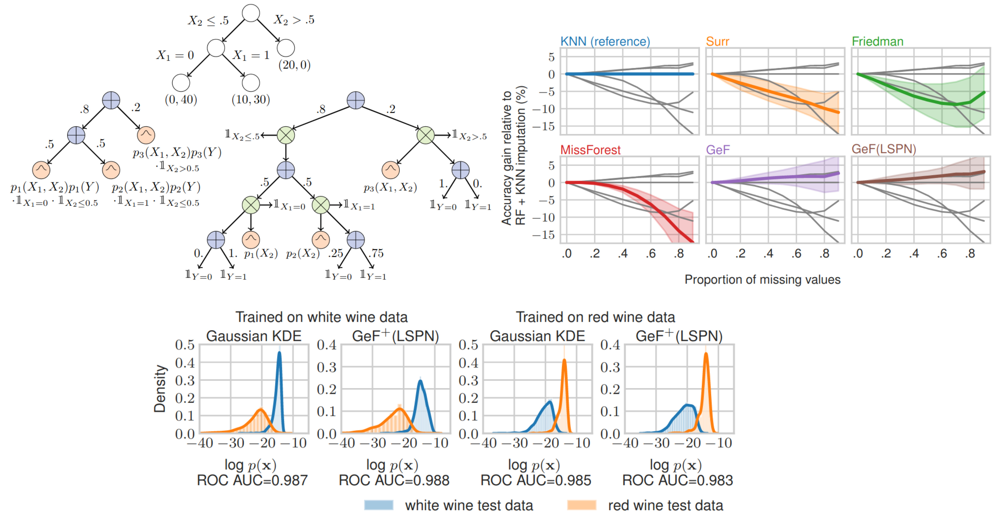
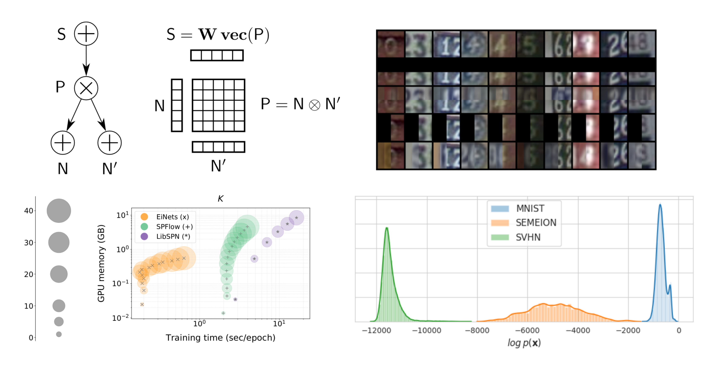
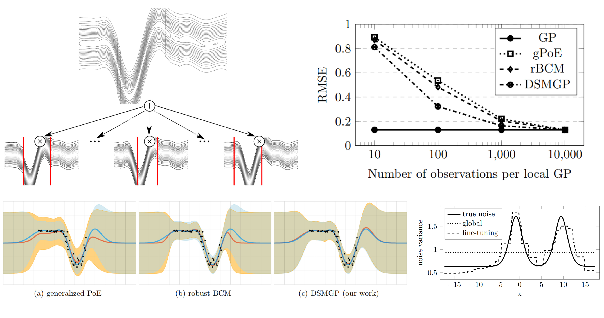
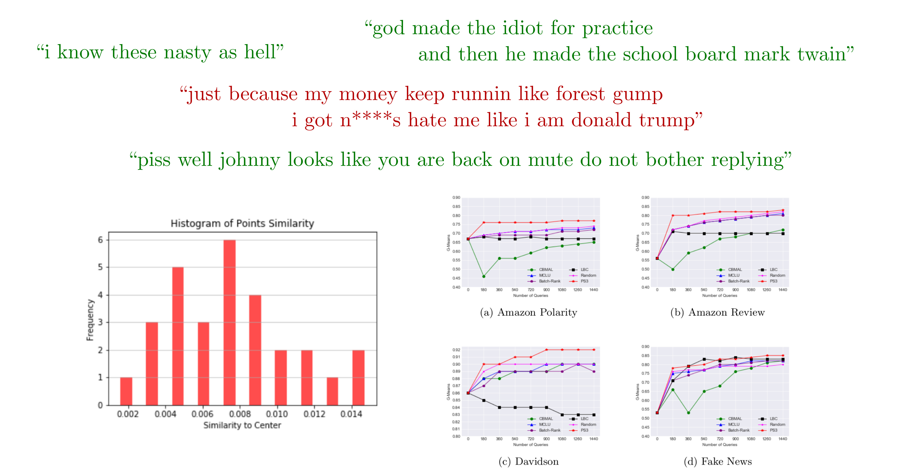
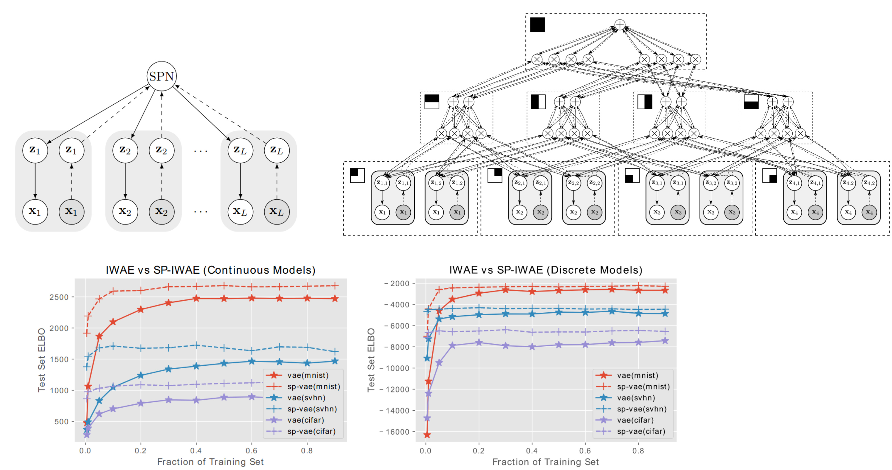
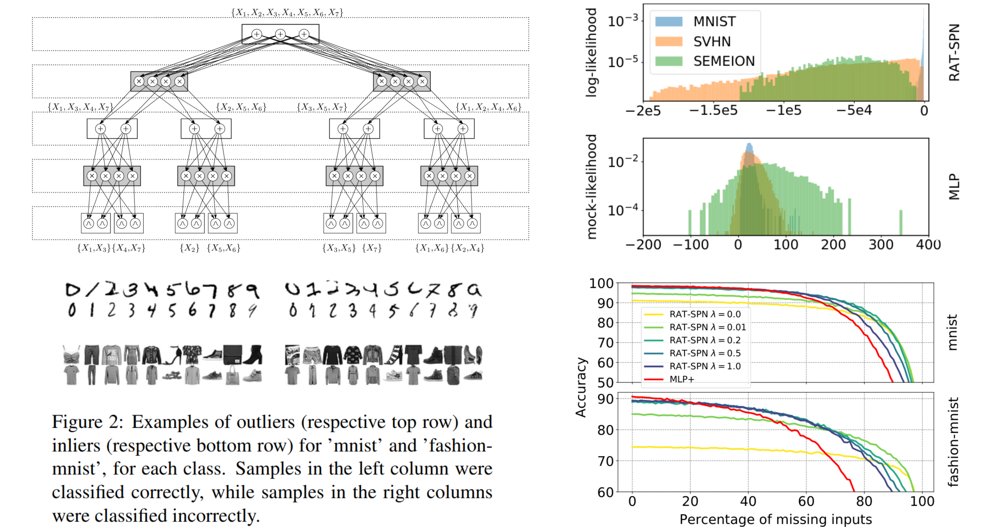

Recent Projects

NeurIPS'20
Joints in Random Forests
Alvaro Correia, Robert Peharz, Cassio P. de Campos
Decision trees and random forests are some of the most widely used machine learning models,
and random forests are one of the strongest classifiers on tabular data.
But did you know that there was always a generative model hiding in your random forest?
Here we show how to exploit this fact for little extra resources.
Specifically, we show how decision trees can be translated into probabilistic circuits (PCs), and random forests
into an ensemble of PCs.
This generalizes the possibilities of standard random forests, such as consistent treatment of
missing data (by probabilistic inference) and outlier detection.
Abstract |
Paper |
Video |
Code

ICML'20
Einsum Networks: Fast and Scalable Learning of Tractable Probabilistic Circuits
Robert Peharz, Steven Lang, Antonio Vergari, Karl Stelzner, Alejandro Molina, Martin Trapp, Guy Van Den Broeck, Kristian Kersting, Zoubin Ghahramani
Probabilistic circuits are tractable probabilistic models and allow exact and efficient inference.
However, they used to be slow in comparison to deep neural networks, since their special structure
(which makes them tractable in the first place) does not map nicely onto deep learning frameworks
such as PyTorch or Tensorflow. Here we proposed a "smart" implementation of PCs, by squeezing all PC
operations into one a handful large
einsum operations.
The result: dramatic speedups and memory savings, large-scale
generative modeling, including data imputation and outlier detection.
Abstract |
Paper |
Video |
Code

AISTATS'20
Deep Structured Mixtures of Gaussian Processes
Martin Trapp, Robert Peharz, Franz Pernkopf, Carl Edward Rasmussen
Gaussian processes (GPs) are a powerful tool for Bayesian regression, as they represent a prior
over functions, which gets updated to a posterior via Bayesian inference.
Interestingly, this Bayesian update is tractable as it takes cubic time and quadratic memory.
While polynomial, this complexity is still prohibitive for large data, i.e. a few thousand data points.
Here we marry GPs with probabilistic circuits (PCs), yielding
Deep Structured Mixture of Gaussian Processes (DSMGPs),
a new process model which elegantly mixes the tractable inference mechanisms of GPs and PCs.
The new model fits data better than several GP approximations while having comparable runtimes.
DSMGPs are also more data efficient than these approximate techniques and allow to model heteroscedastic noise.
Abstract |
Paper |
Video |
Code

ECML PKDD'20
PS3: Batch Mode Active Learning for Hate Speech Detection in Imbalanced Text Data
Ricky Maulana Fajri, Samaneh Khoshrou, Robert Peharz, Mykola Pechenizkiy
The steadily growing prominence of social media exacerbates the problem of hostile
contents and hate-speech.
Automatically recognizing hate-speech is difficult, since the difference between hate-speech
and non-hate-speech might be subtle.
Moreover, hate-speech is relatively rare, leading to a highly class-skewed problem.
We developed PS3, a simple and effective batch mode active learning solution, which
updates the detection system by querying human domain-experts to annotate carefully selected
batches of data instances.
Despite its simplicity, PS3 sets state-of-the art on several hate-speech datasets.
Abstract |
Paper |
Video |
Code

ICML'19
Hierarchical Decompositional Mixtures of Variational Autoencoders
Ping Liang Tan, Robert Peharz
Variational autoencoders (VAEs) are simple and powerful neural density estimators and have
received a lot of attention recently.
However, inference and learning in VAEs is still challenging due to the intractable nature of the
model, especially in high dimensional data spaces.
Here we propose a
divide-and-conquer approach and break up the overall density estimation
problem into many sub-problems, which are each modeled with a set of "small VAEs."
Learning and inference in these VAE components are orchestrated via probabilistic circuits
(PCs), yielding hierarchical decompositional mixtures of VAEs.
This novel model effectively uses
hybrid exact-approximate inference (exact from PCs,
approximate from VAEs) in a natural way.
We show that our model outperforms classical VAEs on almost all of our experimental
benchmarks.
Moreover, we show that our model is highly data efficient and degrades very gracefully in
extremely low data regimes.
Abstract |
Paper |
Code

UAI'19
Random Sum-Product Networks: A Simple and Effective Approach to Probabilistic Deep Learning
Robert Peharz, Antonio Vergari, Karl Stelzner, Alejandro Molina, Xiaoting Shao, Martin Trapp, Kristian Kersting, Zoubin Ghahramani
Probabilistic circuits (PCs) such as sum-product networks (SPNs) are expressive probabilistic
models with a rich set of exact and efficient inference routines.
Their structure, however, does not easily map to deep learning frameworks such as Tensorflow.
Here we use an unspecialized random SPN structure which maps easily onto these frameworks and
can be scale to millions of parameters.
These
Random and Tensorized SPNs (RAT-SPNs) perform often en par with state-of-the-art
neural net learners and deep neural networks on a diverse range of generative and discriminative
tasks.
RAT-SPNs can be used to naturally treat missing data and for outlier analysis and detection.
Abstract |
Paper |
Code